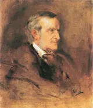

Tristan und Isolde, WWV 90
2 recordings · 19 min
In the Hall
- Prelude to Act I — concert versionFulda Symphonic Orchestra; Simon Schindler · 9 March 200411:09
A cello phrase reaches towards the woodwind, and four notes open a wound that the whole prelude keeps touching. Wagner makes an orchestra yearn through the smallest possible step: one semitone.
Notes as it plays · how it is joined
- Four notes over the cellos
The cellos rise from A to F. Woodwind enter with F–B–D♯–G♯, the Tristan chord. It moves into E7, a chord that points towards A minor. The expected arrival never comes. A rest opens beneath the unfinished phrase.
- A semitone at a time
G♯–A–A♯–B: the opening woodwind line climbs by semitones. Wagner repeats the shape at new pitches, each attempt reaching a little farther. These tiny steps give the prelude its ache; even a rising melody can seem unable to leave the spot.
- The strings carry on
The violin melody continues where the opening phrases kept stopping. Violas and cellos move beneath it; the next idea begins before the previous one has quite let go. Wagner also asks the violins to play a rising passage on the G string, keeping its dark colour as it climbs.
- A letter to Liszt
On 16 December 1854, Wagner writes to Liszt of his planned Tristan: “I shall erect a memorial to this loveliest of all dreams”. He imagines a work in which love, from first note to last, can finally have everything it wants.
- A look stops Isolde
The melody known as ‘the glance’ carries a scene from the opera. Isolde stands over the wounded Tristan with his sword. He looks into her eyes, and she cannot kill him.
- Strings climb under held notes
The strings grow quicker as the wind phrases lengthen. Violin and viola runs climb beneath notes held by oboes, clarinets and horns. Small swells keep passing through the orchestra; each fresh rise begins with another instrument already in motion.
- Short phrases fill the orchestra
The woodwind’s rising semitones and the glance melody now sound together across the orchestra. Brass reinforce them while the strings rush upwards. Material that began with a few exposed notes has become almost too large for the phrase to hold.
- An E beneath the fragments
The brass fall silent. The timpani roll softly on E while short string phrases and wind notes emerge from the retreating orchestra. Wagner asks the music to slow gradually. The opening’s hesitant voice is close again.
- Two singers become the lovers
At the Munich première on 10 June 1865, a married couple sing the lovers: Ludwig and Malvina Schnorr von Carolsfeld. Hans von Bülow conducts. Wagner’s completed score has waited six years for these voices and this stage.
How it is joined
- The violins join the broken phrases
The violins carry the rising melody into a longer phrase. Violas and cellos begin moving beneath it, and the bass changes note while the upper lines continue. The semitone steps of the opening survive, but the rests no longer separate every attempt. On the following rise, Wagner keeps the violins on their dark G strings.
- The brass leave an E behind
The violins rush down from the climax. Brass notes end, the bass thins out, and a quiet timpani roll holds E beneath the smaller wind and string phrases. Wagner marks a gradual slowing of the pulse. The long rising line breaks into short utterances again.
- Liebestod — “Mild und leise”Nanny Larsen-Todsen, soprano; Bayreuth Festival Orchestra; Karl Elmendorff · 19287:28
Isolde looks at Tristan’s body and sees him smiling. Nanny Larsen-Todsen sings her last vision over muted strings, sweeping harp figures and the long-delayed peace of B major.
Notes as it plays · how it is joined
- A voice above muted cellos
“Mild und leise, wie er lächelt” — “Softly and gently, how he smiles.” Isolde’s first words rise above muted, divided cellos. The bass clarinet has its own tender phrase; a clarinet and then the horns join it. The violins wait.
- Isolde sees what others cannot
“Seht ihr, Freunde?” — “Do you see, friends?” Isolde asks the people around Tristan’s body to share her vision. She describes his opening eyes, his swelling heart, his breath. The man on the ground is dead.
- Harp beneath the long phrases
The harp’s figures flow up through trembling strings. High flute notes stretch across the bar while the soprano keeps her own, slower line. The orchestra moves in small, quick notes beneath a voice that still has room to breathe.
- From Agathe to Isolde
Larsen-Todsen begins her stage career in Stockholm in 1906 as Agathe in Weber’s Der Freischütz. She grows into Wagner’s great soprano parts. In 1928 she sings Isolde at Bayreuth and records the role with Karl Elmendorff and the festival orchestra.
- Waves in words and orchestra
Isolde hears sounds swelling around her and wonders whether they are waves of air. The harp sweeps up and down; strings circle through quick figures. Above them, the wind instruments repeat a broad rising phrase, swelling and subsiding while the smaller notes keep going.
- Piccolo above the voice
The piccolo and first violins reach high above Isolde. The harp sweeps across its strings, and brass hold the harmony underneath. Her melody moves in long notes through this brilliant company. The orchestra does the running for her.
- The orchestra finishes the sentence
Isolde’s last words are “höchste Lust” — “supreme bliss”. The harp keeps moving after she falls silent. The closing music settles into B major, and the last arpeggios give way to a held chord marked pianissimo.
How it is joined
- The wind phrases rise over circling strings
Long bass notes support repeated rising phrases in the woodwind. Trumpets and trombones sustain the harmony, while the harp sweeps up and down and the strings keep circling in quick notes. Each broad wind phrase swells, then withdraws; Isolde’s line continues through these successive waves.
- The voice leaves the harp moving
The high violin figures turn downwards and the brass recede. Harp arpeggios continue beneath Isolde’s last phrase, then beneath the orchestra alone. A sustained bass and increasingly quiet wind chords lead towards B major. The harp finally stops running; the last chord is held under a fermata.